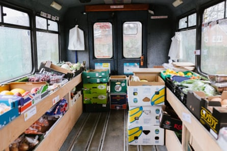

A mobile greengrocer will deliver fresh fruit and vegetables in areas of Liverpool where it is “easier to buy a vape than an apple” as part of a new government scheme to tackle food inequality.
Families in social housing will receive visits from the Queen of Greens , a mobile greengrocer in the city, which will be directed to the areas of highest need.
Researchers at the University of Liverpool have created a mapping tool to identify areas with the poorest access to fresh fruit and vegetables, known as food deserts.
More than 7 million adults across the UK, the equivalent of one in seven households, experienced food insecurity in January this year, according to the charity Food Foundation – almost double the figure in 2020. Food insecurity is defined as skipping meals or cutting back due to difficulties in affording or accessing nutrition.
Peter Kyle, the science secretary, described the number of families struggling to eat nutritious food as “shocking”. He said he hoped the Liverpool project, which began on Monday, would be expanded across the UK if it was successful.
“Places like Liverpool for too often have been the last to benefit from new waves of investment [and] new technologies,” he said. “As the country goes through economic change sometimes it’s been at the detriment to places like Liverpool – but not with this government … I want the rest of the country to learn from Liverpool.”
The Queen of Greens delivers affordable fresh food to about 470 households a week in Liverpool.Photograph: X/The Queen of Greens
The Queen of Greens delivers affordable fresh food to about 470 households a week after launching in the city three years ago, when the cost of living crisis left many cutting back on essentials.
Lucy Antal, the director of the community interest company that runs the service, said: “There’s always a lot of talk about people needing to eat better … but when you’re living in a space where it’s easier to buy a vape than an apple that makes it very difficult for people to follow public health advice, to feel good about themselves.
“It probably has an adverse effect on people’s mental health to realise that they can’t give their children the best start in life because of where they live or what their environment is like.”
Antal said she estimated that another 100 families a week would be served by the government-funded expansion, which will be targeted in areas of social housing ill-served by supermarkets.
The University of Liverpool will analyse the effect of this new approach on people’s diet and their broader health. Prof Charlotte Hardman, who is leading the project, said the mapping tool would draw on social housing data and direct the Queen of Greens to those in greatest walking distance to healthy food.
She said the three-year pilot, expected to get under way next spring, would estimate the potential public health impacts of mobile greengrocer schemes if they were rolled out more widely.
Liverpool’s mobile service is one of six projects given a combined £8.5m by the government to tackle food inequality. In Dundee and Nottingham, two state-subsidised “public restaurants” will open to provide healthy meals costing £3 to £5 in areas of high need.
Other schemes in Southampton, the New Forest and the Isle of Wight will aim to improve the quality of ingredients handed out at food pantries, which are similar to food banks but do not require a customer referral.
A survey by the Food Foundation in January found that 2.4 million adults – 4.6% of UK households – had gone without food for a whole day because they could not afford or access it.
Single parents were more than twice as likely to experience food insecurity than other families with children, the research found, with nearly one in three reporting skipping full meals.